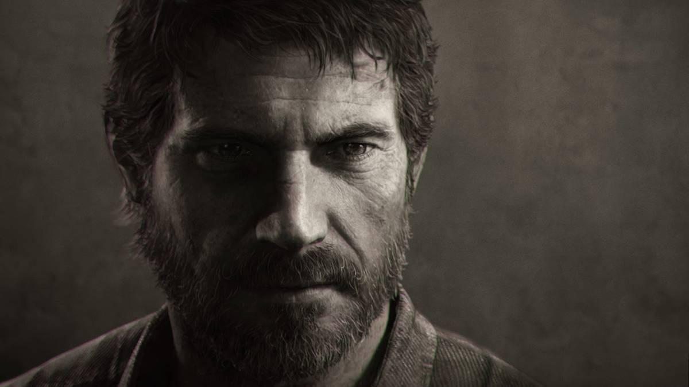

Joel Miller es el principal protagonista de The Last of Us. El personaje es interpretado por Troy Baker.
Joel nació el 26 de septiembre de 1981, en Arlington, Texas, y creció en el estado junto a su hermano menor, Tommy. Cuando era niño, Joel desarrolló una pasión por la música, aprendió a tocar la guitarra acústica y una vez incluso aspiró a convertirse en cantante. En su adolescencia, Joel tuvo una hija llamada Sarah y estuvo casado con su madre por un corto período de tiempo. Cargado desde temprana edad con las responsabilidades de la paternidad, nunca tuvo la oportunidad de asistir a la universidad. Con respecto a su ex esposa, lo que sea que haya ocurrido entre ellos es doloroso para Joel hablar de ello.[5] Poco después del nacimiento de Sarah, la esposa de Joel lo dejó.[6] Como resultado, crio a su única hija como padre soltero durante la mayor parte de su vida.[5] Los dos vivían juntos en una casa unifamiliar de dos pisos en algún lugar de Austin, Texas o sus alrededores, ubicada en el condado de Travis a través de la carretera estatal 71 de Texas. De adulto, Joel trabajó como carpintero junto a Tommy. Tenía un revólver bajo llave en una caja fuerte en su oficina y era dueño de una camioneta pick-up afuera de su casa. Planos de construcción colocados en su mesita de noche junto con varias copias de un libro llamado Regionalismo de construcción en la parte superior de su estantería. Tenía la ambición de comenzar su propio negocio, con una copia de Todo lo que necesita saber sobre la creación de una startup también en una mesa junto a su cama. Su trabajo lo mantenía en forma y tenía una cinta de correr en su dormitorio. Mencionó en una llamada telefónica que estaba luchando por mantener su trabajo con un contratista A pesar de sus largas y arduas horas de trabajo, se las arregló para pasar tiempo de calidad con Sarah, como se ve en las fotografías exhibidas en toda su casa que muestran a los dos en un crucero, en un carnaval con Tommy y en uno de los partidos de fútbol de Sarah.[7] Además, los dos solían hacer varias caminatas juntos. Sarah también hizo que la llevara a todos los museos de Texas
